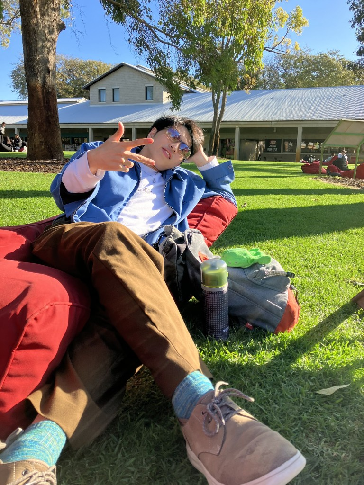
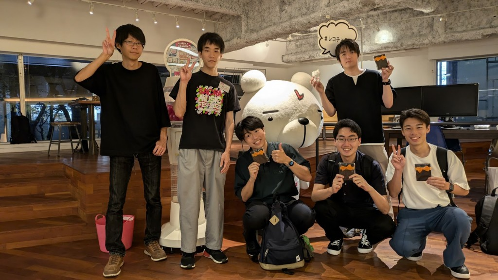

筑波大学大学院
Taiki Misawa
研究・開発・地域をつなぐ、学生ビルダー／リサーチャー
筑波大学大学院で、視覚情報・センサー・AIを活用し、人の判断や行動を支援するシステムを探究しています。

About / Identity
About / Identity
情報科学を学びながら、AI・自動化・プロダクト開発・コミュニティ形成、そして技術と社会の関係に関心を持っています。
Focus Areas
Focus Areas
Timeline
Timeline（主要な歩み）
Projects / Activities
Projects / Activities（最近の取り組み）
Vision
Vision
AIによって、人が本来向き合うべき活動に集中できる環境をつくる。自動化と知能化を通じて、情報の整理・判断・実行を支援し、一人ひとりが創造的で意味のある活動に時間を使える社会を目指します。

Contact
Links / Contact
AIとコミュニティ実装、実用的な技術活用に関する対話・連携のご相談を歓迎します。